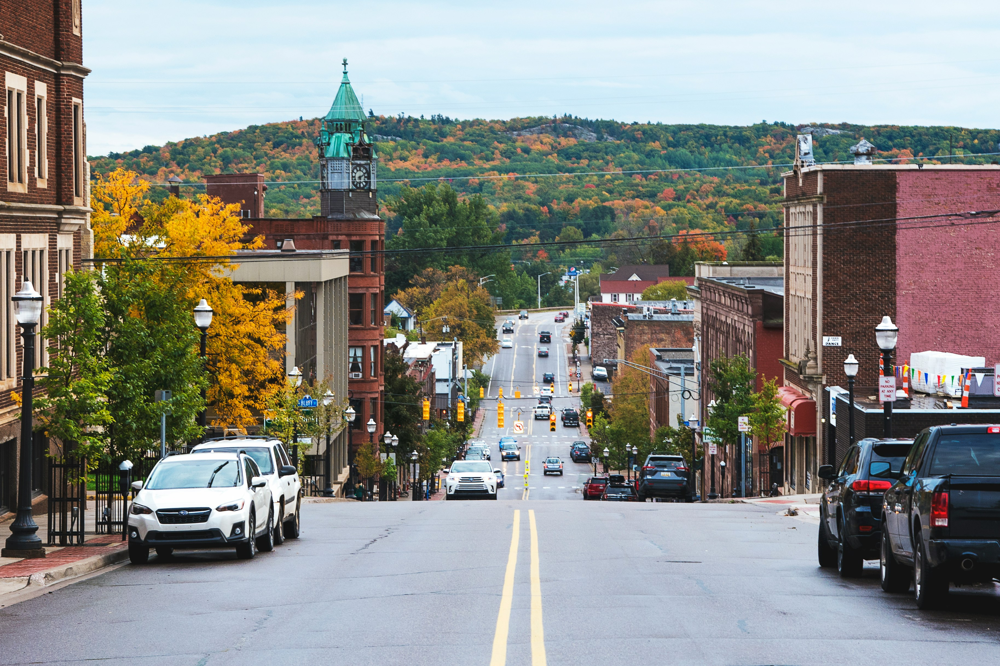
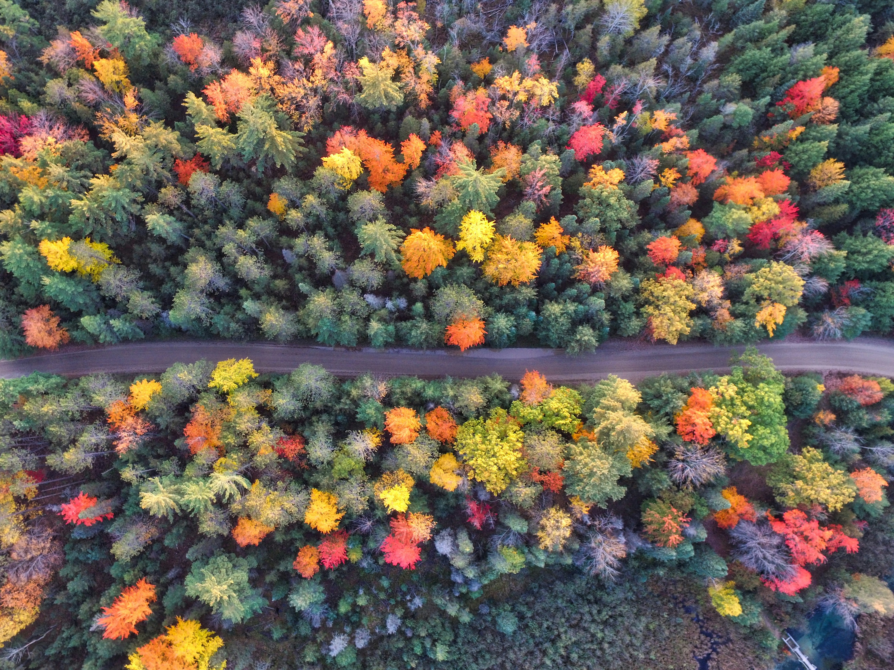
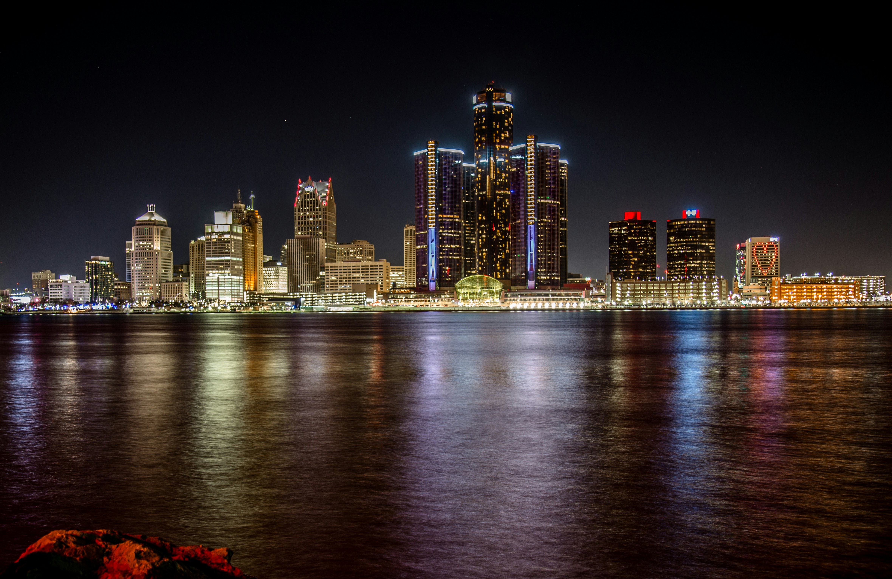
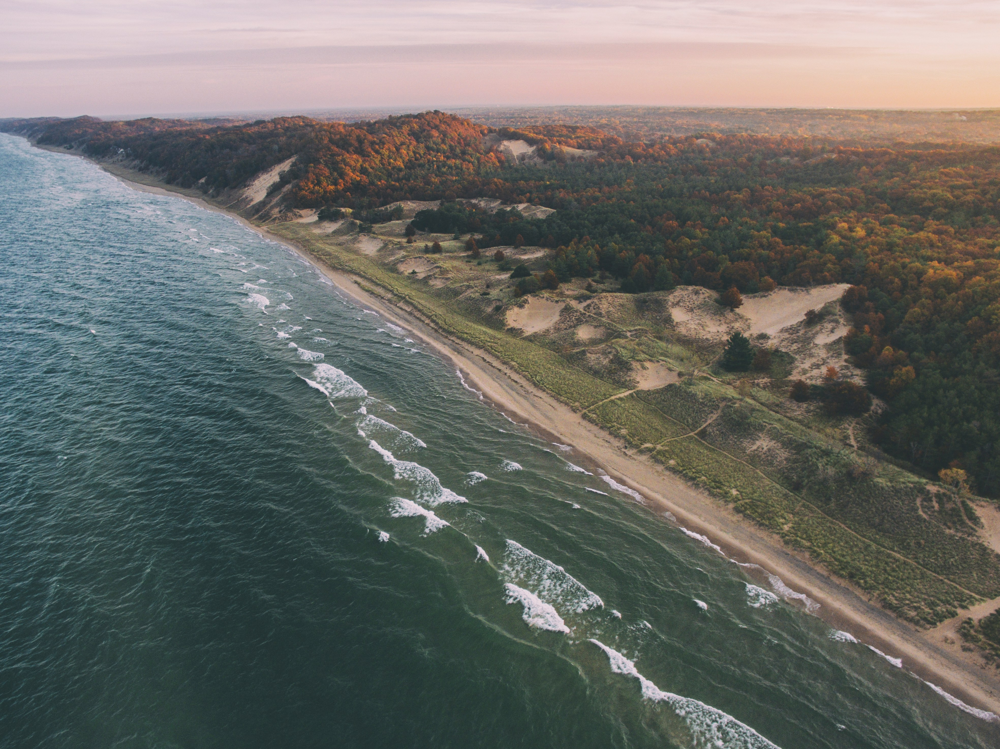

Michigan, a state located in the Great Lakes and Midwestern regions of the United States, was admitted to the Union on January 26, 1837, becoming the 26th state. Known as the "Great Lakes State" and "Wolverine State," Michigan boasts a diverse landscape of forests, lakes, and miles of coastline. Detroit, its largest city, is famous as the automotive capital of the world. Michigan is home to the Great Lakes, which include Lake Superior, Lake Michigan, Lake Huron, and Lake Erie.
These vast bodies of water not only provide breathtaking scenery but also support a thriving fishing industry and offer numerous recreational activities like boating, swimming, and camping. The state's economy has historically been driven by manufacturing, particularly in the automobile industry. Detroit's nickname "Motor City" reflects its role as the birthplace of major automobile companies like Ford, General Motors, and Chrysler.
In recent years, Michigan has diversified its economy, with significant contributions from technology, healthcare, and tourism sectors. Michigan also boasts a rich cultural heritage, with a vibrant arts scene, numerous museums, and historical landmarks. The state is known for its love of sports, particularly football with the University of Michigan and Michigan State University football teams drawing passionate fans from across the state. With its natural beauty, economic vitality, and cultural richness, Michigan continues to be a dynamic and integral part of the United States.